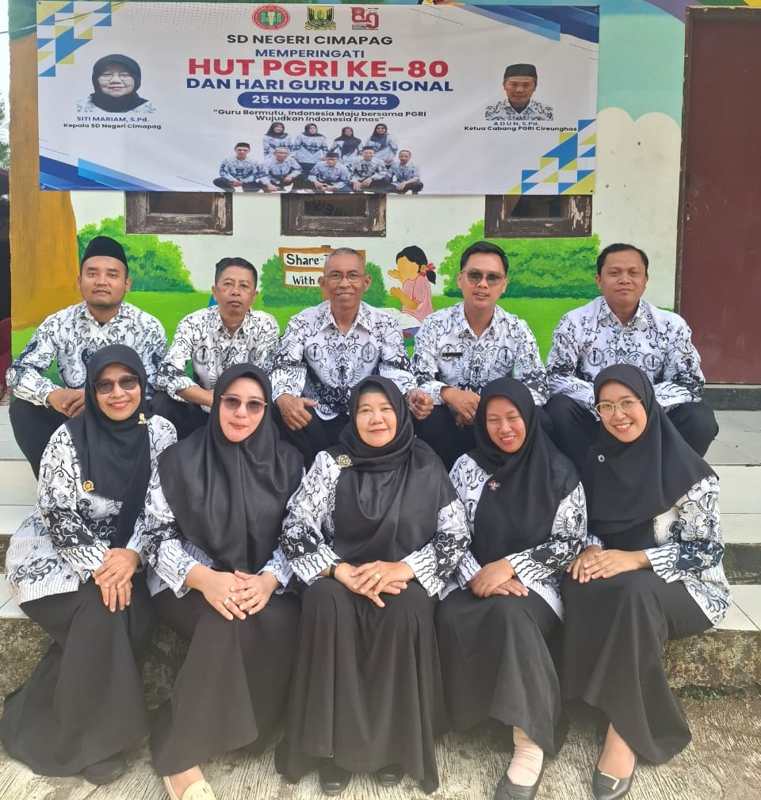
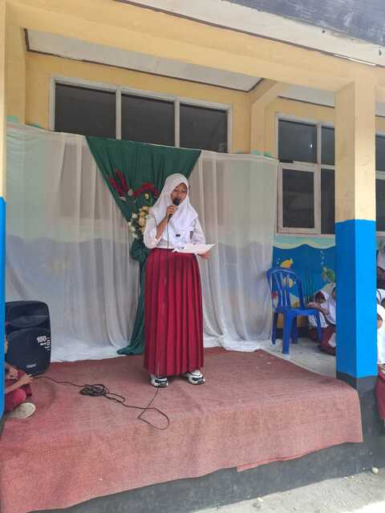
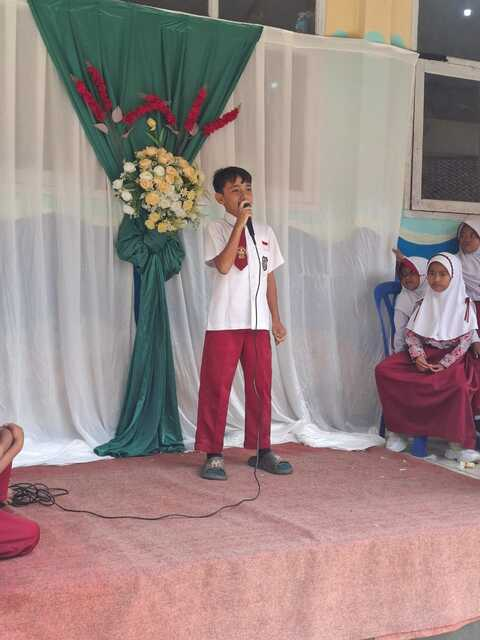
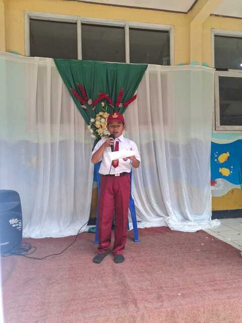
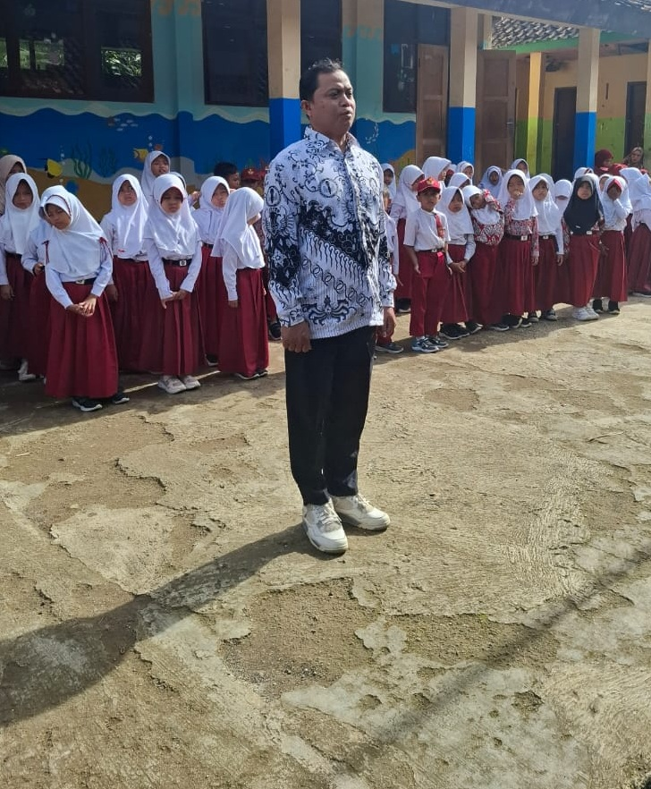
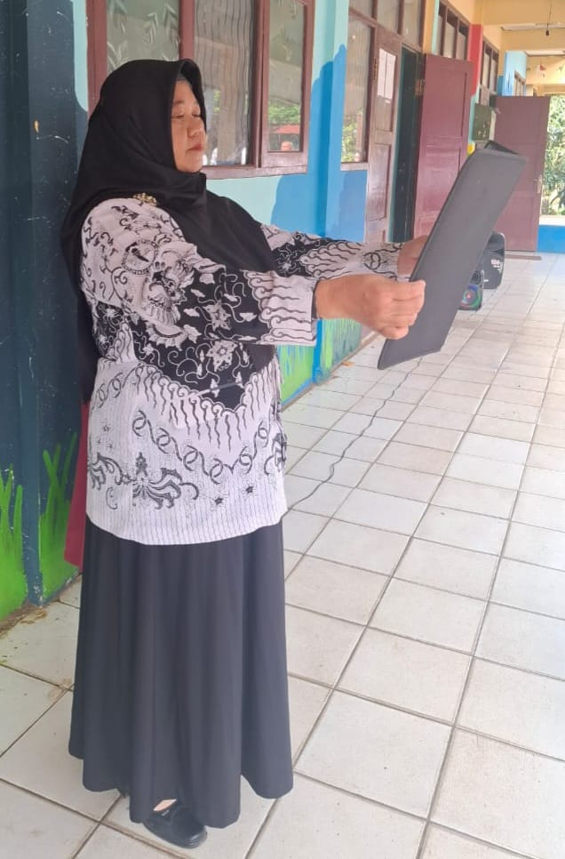
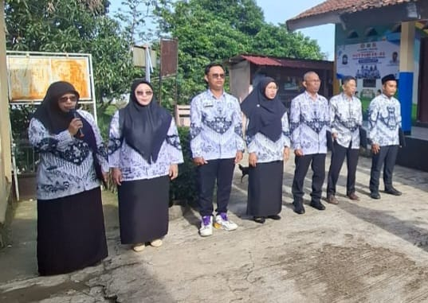
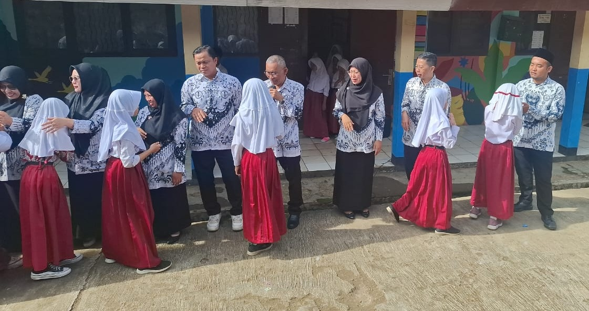

SD Negeri Cimapag
SD Negeri Cimapag
SD Negeri Cimapag
SD Negeri Cimapag

Pemerintah telah resmi merilis pedoman kegiatan belajar mengajar (KBM) melalui Surat Edaran Bersama (SEB) 3 Menteri (Kemendikdasmen, Kemenag, dan Kemendagri) untuk menyambut bulan suci Ramadan dan Hari Raya Idulfitri 1447 Hijriah/2026 Masehi. Dokumen ini menjadi acuan utama bagi seluruh satuan pendidikan dalam mengatur jadwal akademik dan penguatan karakter religius siswa.
Halaman ini menyajikan informasi lengkap mengenai penyesuaian kalender pendidikan selama masa Ramadan, yang meliputi:
Manfaat Bagi Pengguna: Informasi ini sangat penting bagi Kepala Sekolah, Guru, Orang Tua, dan Siswa untuk merencanakan agenda akademik serta kegiatan keluarga jauh-jauh hari agar selaras dengan ketetapan pemerintah.
Sumber: Kemendikdasmen. Download SEB 3 Menteri
Tes Kemampuan Akademik (TKA) adalah asesmen standar nasional yang diselenggarakan oleh Kementerian Pendidikan Dasar dan Menengah (Kemendikdasmen) untuk mengukur capaian akademik murid secara objektif dan terukur pada mata pelajaran tertentu sesuai kurikulum nasional.
Tujuan Utama
Murid dan sekolah didorong untuk memanfaatkan fasilitas gratis dari Kemendikdasmen guna mengenali format soal:
Pendaftaran dan pengelolaan data dilakukan melalui portal resmi https://tka.kemendikdasmen.go.id/ oleh operator sekolah masing-masing.
Sumber: Kemendikdasmen.
Pemerintah melalui Kementerian Pendidikan, Kebudayaan, Riset, dan Teknologi resmi merilis Kertas Kerja Bantuan Operasional Satuan Pendidikan (BOSP) untuk Tahun Anggaran 2026. Dokumen ini menjadi a cuan penting bagi setiap satuan pendidikan dalam merencanakan penggunaan dana operasional secara tepat, efektif, dan sesuai ketentuan terbaru.
Dengan rilisnya dokumen ini, satuan pendidikan sudah bisa mulai melakukan penyusunan rencana anggaran serta menyesuaikan program kerja untuk pelaksanaan tahun 2026. Penyusunan lebih awal diharapkan dapat membantu sekolah memetakan kebutuhan secara lebih akurat dan memastikan seluruh kegiatan berjalan tepat waktu.
Sumber: Instagram @aplikasi.rkas.
Dalam rangka memperingati Hari Guru Nasional yang ke-80, SD Negeri Cimapag dengan bangga menyelenggarakan serangkaian kegiatan sebagai bentuk penghormatan dan apresiasi kepada para pahlawan tanpa tanda jasa. Pada momentum istimewa ini, kami ingin mengangkat kembali semangat dedikasi, ketulusan, dan perjuangan para guru dalam membimbing serta membentuk karakter generasi masa depan.
Sebagai wujud penghargaan, sekolah mengadakan beberapa kegiatan khusus, di antaranya:
Melalui rangkaian kegiatan ini, diharapkan tumbuh rasa hormat, terima kasih, dan kebersamaan antara guru serta siswa.
Semoga peringatan Hari Guru ke-80 ini menjadi pengingat bahwa setiap ilmu, setiap nasihat, dan setiap langkah kecil yang diberikan para guru akan menjadi cahaya bagi masa depan bangsa.
Selamat Hari Guru ke-80.









Sekolah kami saat ini sedang mengadakan kegiatan ekstrakurikuler Pramuka sebagai upaya pembinaan karakter peserta didik agar menjadi pribadi yang disiplin, mandiri, dan bertanggung jawab. Kegiatan ini bertujuan untuk melatih kedisiplinan, kerja sama, dan kemandirian peserta didik melalui kegiatan yang edukatif dan menyenangkan.
Buka Halaman Lengkap
{kind=link}
{kind=link}
{kind=link}
{kind=link}
{kind=link}
{kind=link}
{kind=link}
{kind=link}
{kind=link}
{kind=link}
{kind=link}